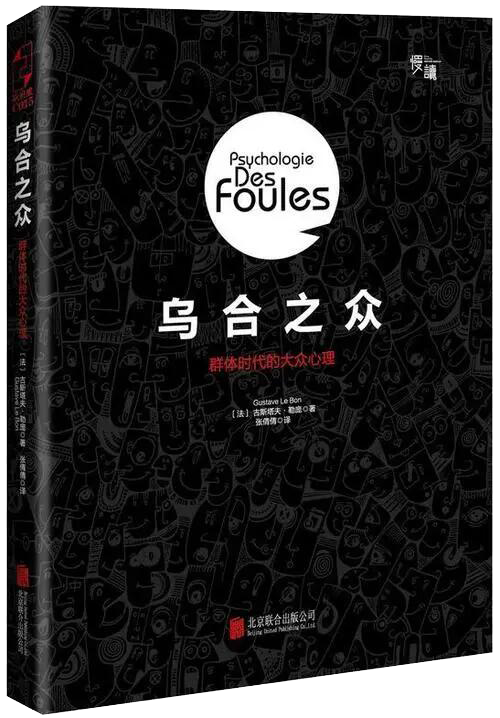

《乌合之众》读书分享
《乌合之众》这本讲述的是群体心理学的书，以“乌合之众”这一贬义词为书名表达了作者勒庞对群体聚集体产生的行为与心理的偏见和批判。结合传播学的知识与《乌合之众》我们可以知道“个人”是有独立的人格意识的并且具有思想、智慧、推理等能力，于是“人内传播”是积极能动的反应，表现了人的意识和思维活动的的生产性和创造性。而“群体”则是无意识的、情感用事、将个人弊端放大的，“群体传播”是群体生存和发展的一条基本的生命线。“个人”在孤立的时候具有理性和意识，能够克制自己的行为与欲望，在接受到信息的时候信息在人体内部进行信息处理并且能很好的完成自己应该做的事情。但是一旦“个人”被置于“群体”之中，那么作为“个人”本就只占小部分的智慧、思想、推理等能力就会被那情感、本能、欲望等所侵占成为无意识的奴隶，而许多无意识的奴隶构成一个无意识的“群体”（乌合之众）。尤其是在如今信息化、网络化高速发展的时代，在群体模仿与“匿名性”的作用下“群体”更容易变成“乌合之众”。
2023-4-20
